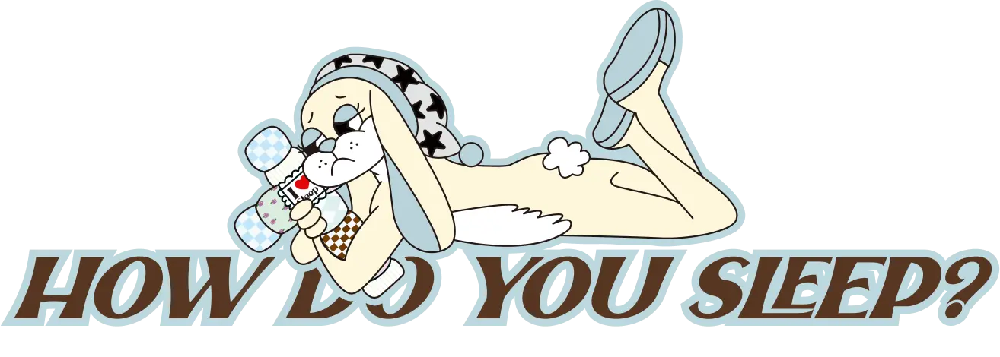
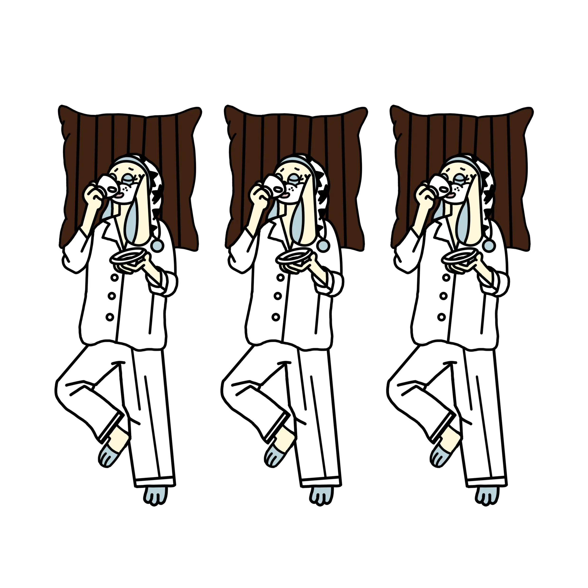
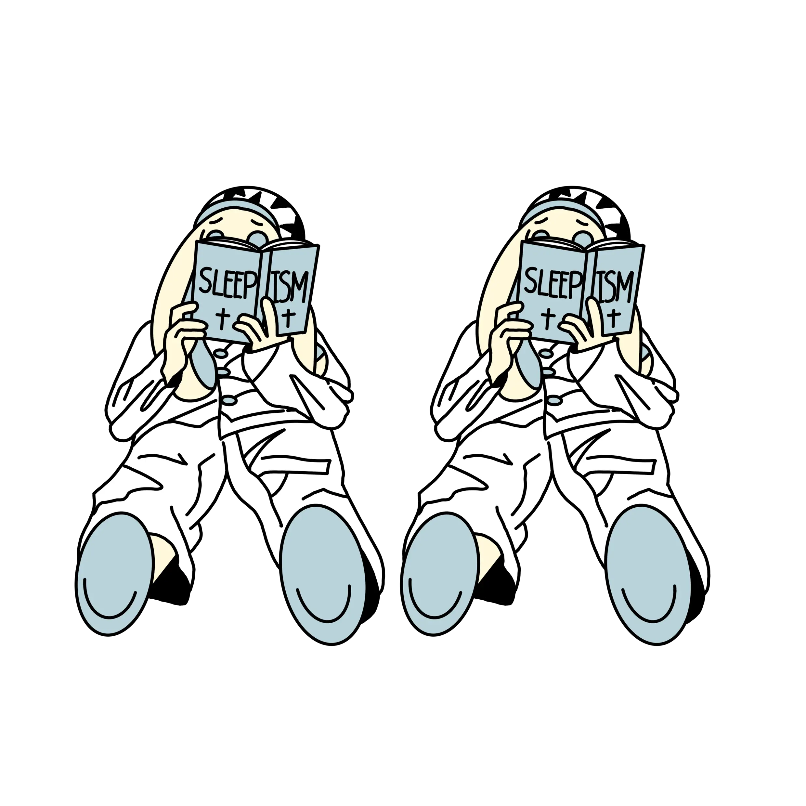
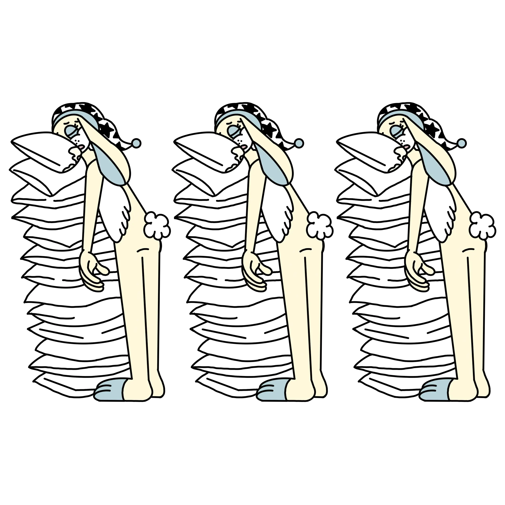

BEDTIME PROCRASTINATION SCALE TEST
TEST 1
매우 그렇지 않다
그렇지 않다
보통이다
그렇다
매우 그렇다

Bedtime Procrastinator
비(非) 지연군
규칙적인 시간에 안정적으로 잠자리에 드는 습관을 지니고 있는 사람들을 말해요!
디지털 기기 사용과 수면 시간의 경계를 비교적 명확히 구분해요!
규칙적 수면을 통해 건강한 생활 리듬을 유지해요!

Bedtime Procrastinator
중위험 취침시간 지연군
스트레스나 특별한 상황으로 인해 가끔 수면을 지연시키는 그룹이에요!
자기 조절 능력이 불안정해서 디지털 기기나 미디어 사용이 늦은 밤까지 이어지는 경우가 있어요!
이로 인해 일상 생활에 영향을 받지만, 의도적인 노력을 통해 회복 가능해요!

Bedtime Procrastinator
고위험 취침시간 지연군
습관적으로 취침 시간을 늦추는 사람들이에요!
자정 이후 잠자리에 드는 경우가 많고, 스마트폰, 영상, 게임 등으로 의도적으로 수면을 지연시켜요!
만성적인 피로감, 집중력 저하, 일상 리듬 붕괴 등을 자주 경험해요 ㅜㅜ